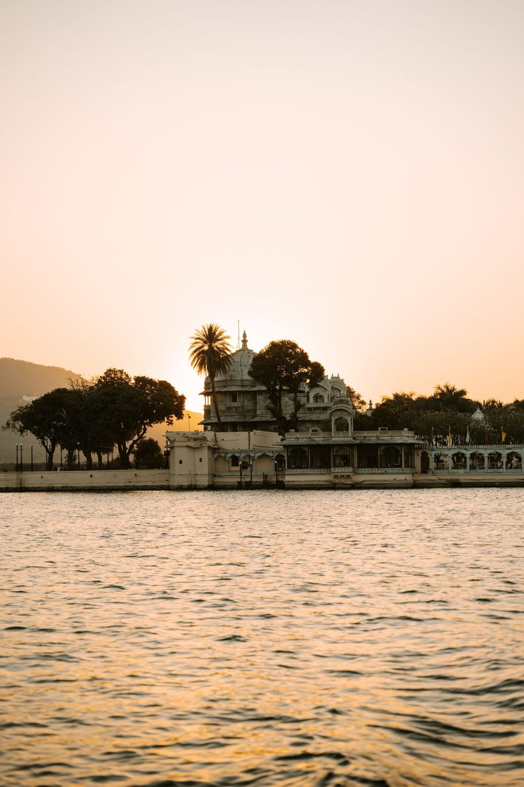
Udaipur
46 weddings
Lake-facing palace ceremonies; we film boat entries from the water and the air.
Est. 2015 · A Jaipur studio
We're a fourteen-person team of photographers, filmmakers and editors who have spent eleven years learning when to step in — and when to disappear.
Our crews speak your family's language
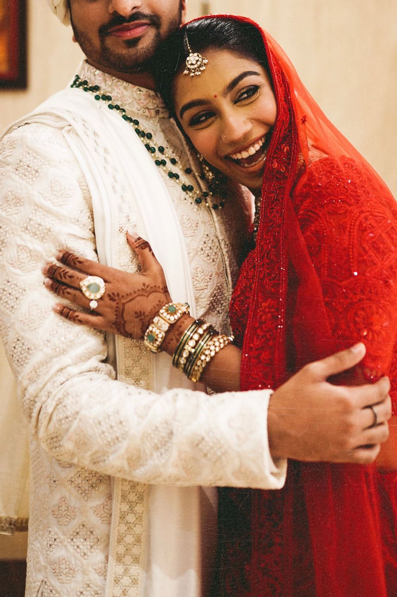
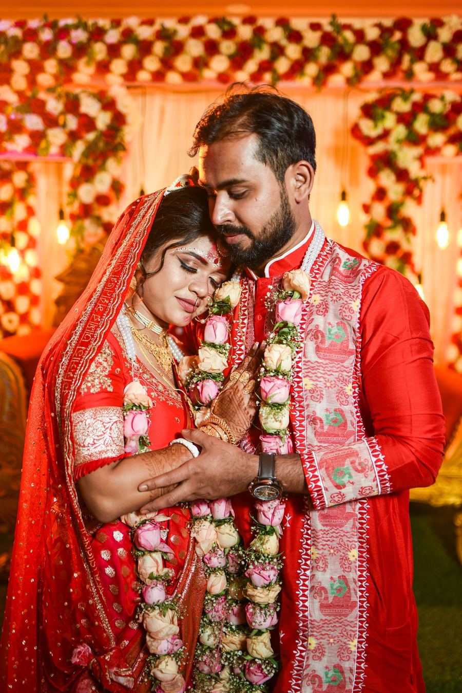
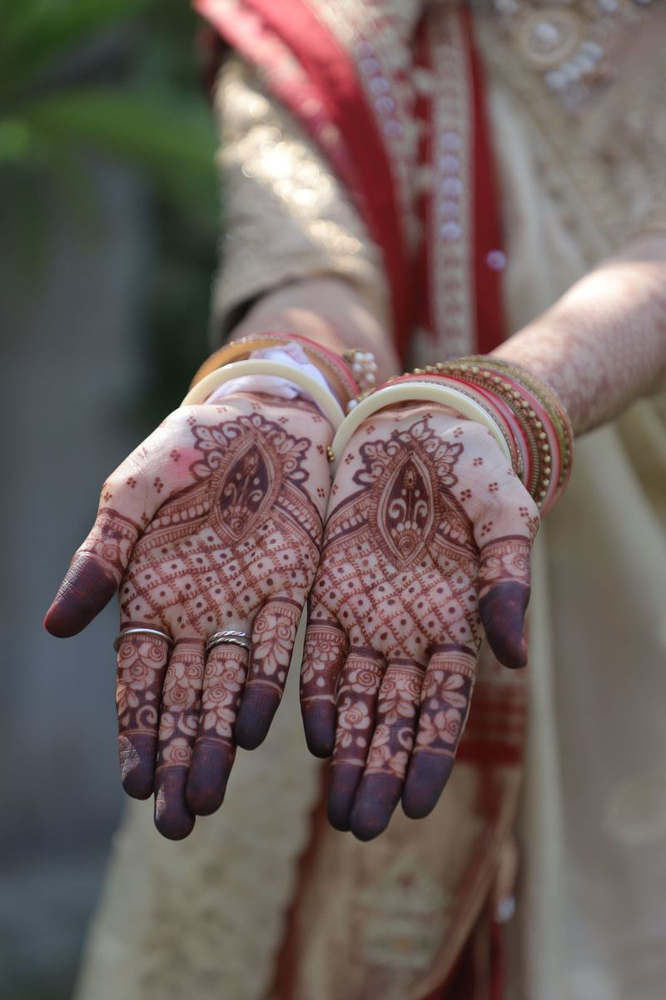
Next open dates
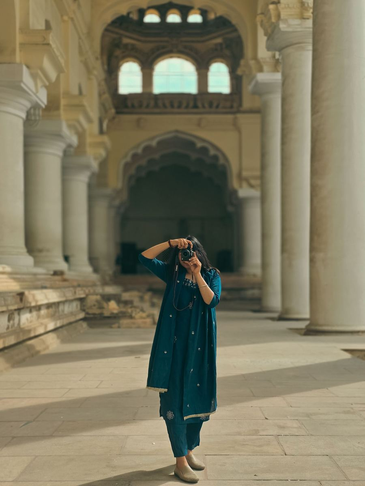
Our story
In 2015 Rhea Mathur was the cousin with the camera and Dev Shekhawat was the friend filming on his phone. Their footage of that sangeet travelled further than the hired crew's — and a studio was born in a spare room in Malviya Nagar.
Today we work from a light-filled studio in C-Scheme, but the rule from that first night hasn't changed: film the people, not the décor.
— Rhea & Dev
How it works
Five steps, no surprises. Most couples go from enquiry to a confirmed crew in under a week.
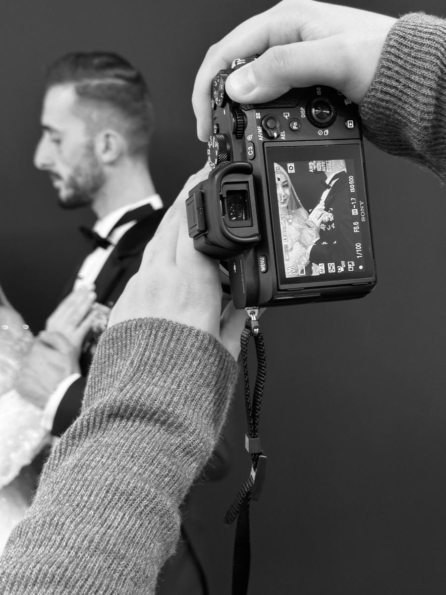
Day 0
Share your date, city and events. We reply with availability and a quote built around your actual schedule — not a generic rate card.
Week 1
A 30-minute video call with your lead photographer. We learn the families, the rituals and the moments you'd never forgive us for missing.
Within 7 days
Sign the agreement and pay the retainer. Your crew is locked in, and the date disappears from our calendar for everyone else.
6–8 weeks before
A shared timeline, a family shot list and a venue recce. If you've booked a pre-wedding shoot, it happens in this window.
The big days onward
We coordinate directly with your planner on the day. Galleries, films and album proofs then follow on the dates written into your contract.
Destinations
Jaipur is home, but more than half our weddings happen somewhere else. Six favourites — and what we love about filming in each.

46 weddings
Lake-facing palace ceremonies; we film boat entries from the water and the air.
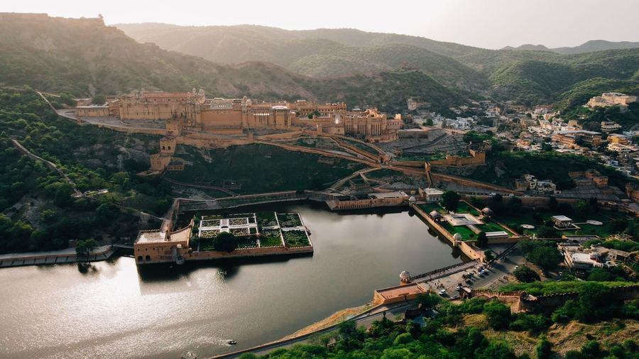
128 weddings
Our home turf — havelis, fort lawns and the old-city lanes we know by heart.
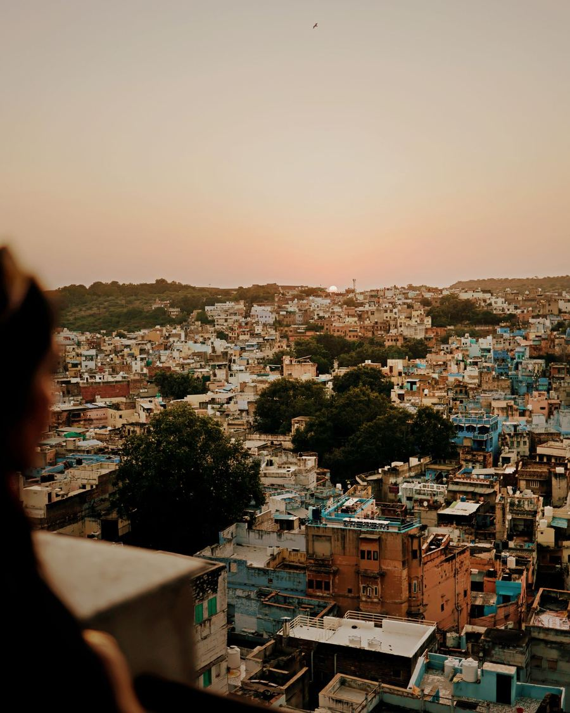
31 weddings
Blue-city portraits at golden hour and sangeets under the walls of Mehrangarh.
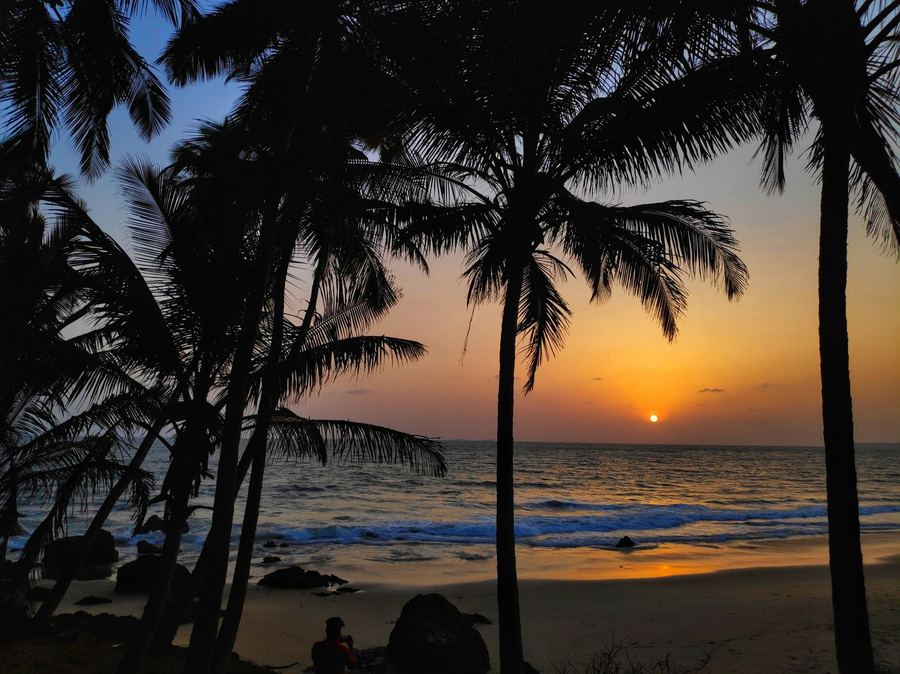
27 weddings
Beach pheras timed to sunset, with wind-shielded microphones so vows stay clear.
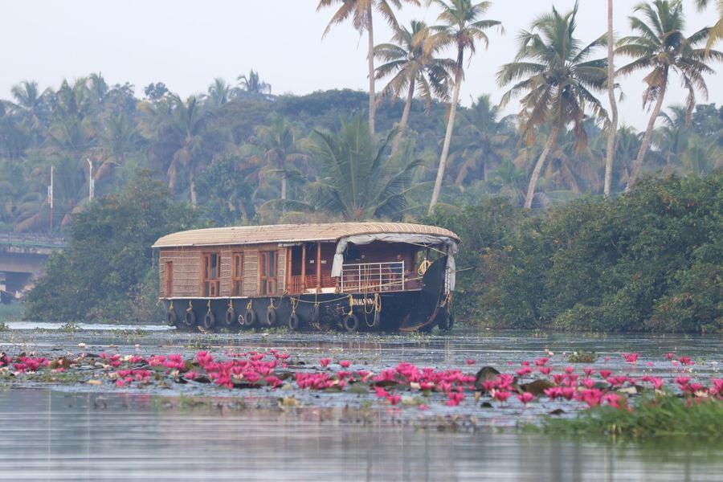
18 weddings
Temple mornings in Guruvayur and receptions drifting along the backwaters.
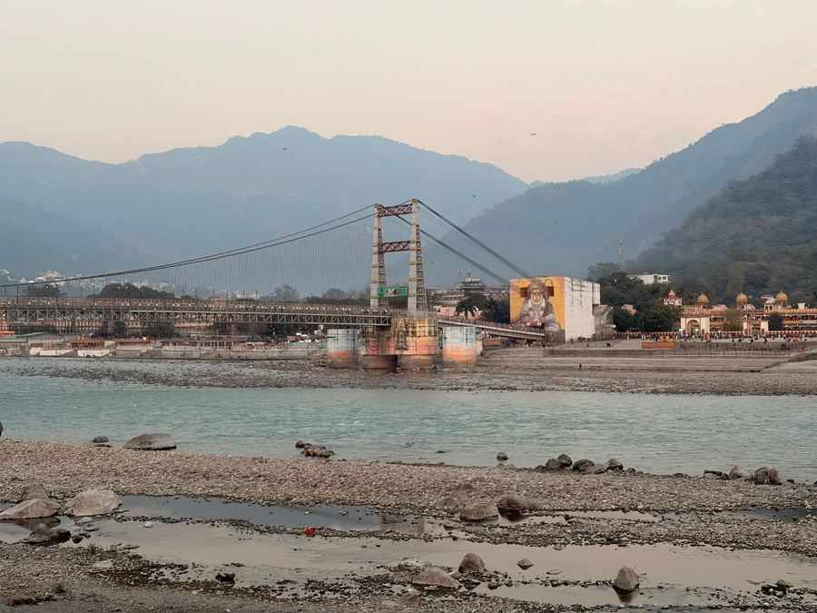
12 weddings
Riverside vows, Ganga aarti sessions and mountain light that needs no filter.
The crew
Four of the fourteen faces you'll meet. Each wedding is led by someone from this group.
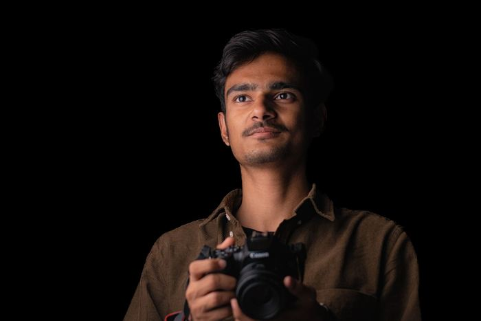
Co-founder · Lead cinematographer
Believes every wedding film needs one long, unbroken take — usually the baraat.
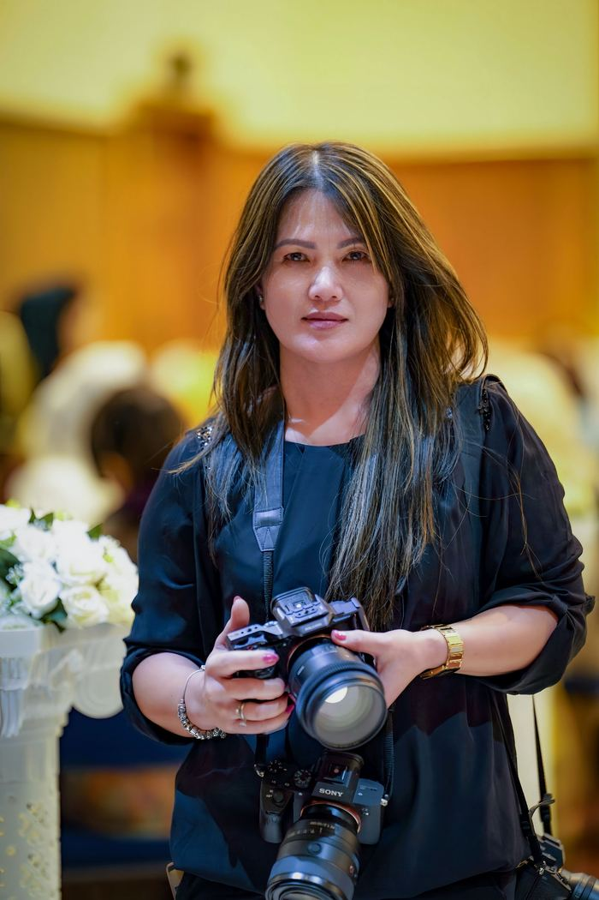
Lead candid photographer
A former photojournalist with a gift for finding the grandmother in every crowd.
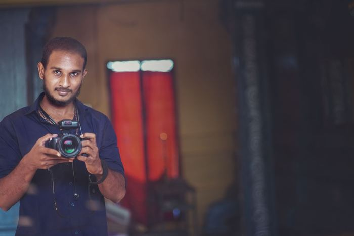
Drone pilot · Second shooter
Six hundred hours flown over forts, lakes and beaches — without a single missed shot list.
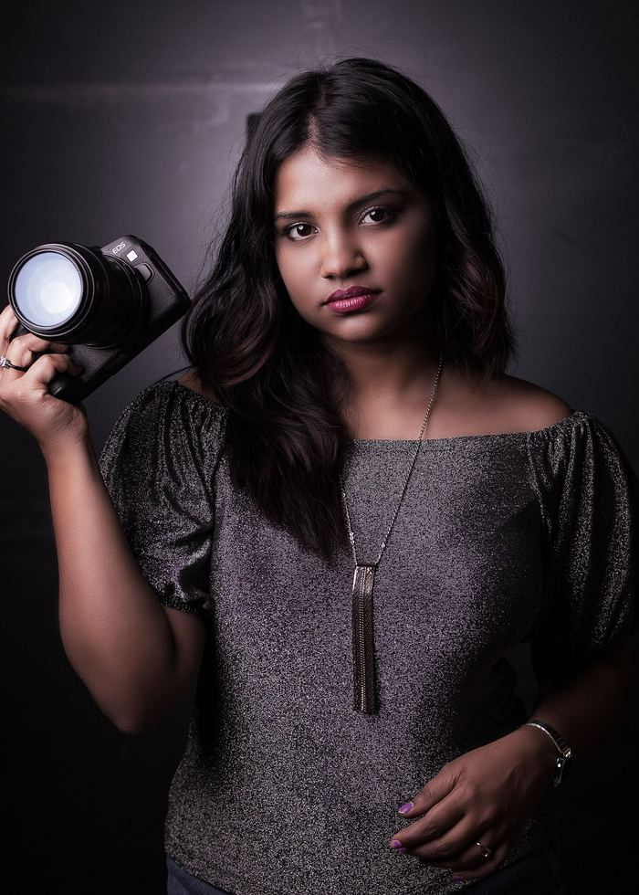
Colourist · Film editor
Grades every film by hand and keeps skin tones true under yellow haldi light.
Before you book
Peak-season dates between November and February usually go 9–12 months ahead. Weekday and off-season weddings can often be booked with 8–10 weeks' notice.
Yes. We license tracks from professional music libraries and you can shortlist from them. Popular Bollywood songs can be used for private viewing, but platforms may mute them if you post publicly.
Roughly 300–400 edited photographs per event, depending on its length and guest count. We never pad galleries with near-identical frames.
A meal break for the crew, one point person from each family, and twenty minutes alone with the two of you at golden hour. That's it.
Please let them. We share our timeline and crew list with planners a month ahead and join their final run-through call.